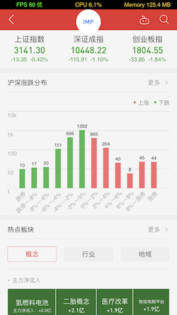

本篇文章主要的目的是分享一种UITableView模块化开发的思路。
在开发过程中，常常会遇到很复杂的tableview的界面，往往每一个的section都是完全不一样的。比如这样：

这个界面中，每一个section都是不同的。当需要多人去开发这样的界面，每个人负责一到两个section，如何去管理大家的代码，让代码互不冲突呢？
解决方法就是分模块化开发。大致的思路是这样的：控制器中不写任何和各个section相关的代码，只需创建UITableView并编写其相关的数据源方法。这里的每一个section对应一个继承自NSObject的control类。在控制器中，添加一个个control到数组controls中。可将control作为一个控制器，所有的数据获取，逻辑处理均可在其中完成。
说到这里，你如果看过自造轮子：YQCommonCell 简化表单视图开发，应该会发现两者在思路上是类似的，将section对应模型抽离出，相关section的属性均在模型中编写。
但是，目前存在两个问题：
1.如何将每一个section都正确的显示在界面上。或者说，section界面设置的入口改在哪？
2.control想要刷新tableview的时候，该如何去做。
1.如何将每一个section都正确的显示在界面上。或者说，section界面设置的入口改在哪？
在初学时，遇到这种界面，第一反应就是创建自定义视图cell，在cellForRow中设置对应的cell。这样做的代价是所有的数据请求等都在控制器中完成，而现在要由control来完成。在control中设置一个全局属性view，然后再去cellForRow设置？不是的。
其实方法很简单，在tableView数据源的方法cellForRow中，让每一个control去实现cellForRow方法，也就是说，在control中，自行设置其对应的section的cell。其他的section属性也是类似的。
那么，可写个协议，我暂时命名为YQModuleResolveControlProtocol。在该协议中，设置必须实现的方法：
1 | @required |
还有可选择实现的方法：
1 | @optional |
只需让每一个control遵循YQModuleResolveControlProtocol，实现必须实现的方法。
在控制器中，以cellForRow为例：
1 | - (UITableViewCell *)tableView:(UITableView *)tableView cellForRowAtIndexPath:(NSIndexPath *)indexPath |
这样，很完美的将代码抽离到一个个模块中。
2.control想要刷新tableview的时候，该如何去做。
这个问题的本质就是数据传递或事件传递，很简单，用代理即可。
新的协议：
1 | @protocol YQModuleResolveControlDelegate <NSObject> |
让控制器遵循该协议，并实现（以刷新某一行为例）：
1 | #pragma mark - YQModuleResolveControlDelegate |
这样，就能做到control随时主动刷新tableView。
以上，就能做到本文最开头所写的要求，将每一个section对应的所有代码抽离至control。具体开发时，让每一位开发人员自行创建control即可。而ViewController将会一身轻松且不需要时常修改代码。
顺便补充一点，如果想让ViewController编写完后就再也不修改任何代码，可将控制器controls添加control这一部分也抽离到分类中，每一位开发人员自行去分类中添加自己的control即可。